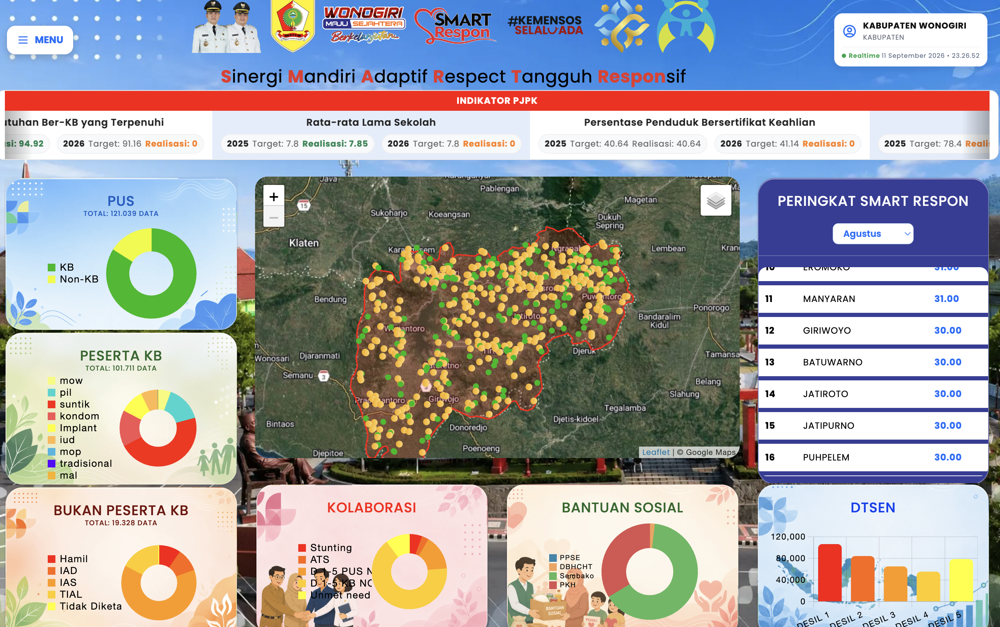

SMART RESPON APP
Aplikasi milik Dinas Sosial PPKB dan P3A Kabupaten Wonogiri yang digunakan untuk monitoring dan pendataan sosial masyarakat. Dilengkapi fitur geotagging lokasi rumah untuk memudahkan pemantauan, validasi data, dan evaluasi program sosial.